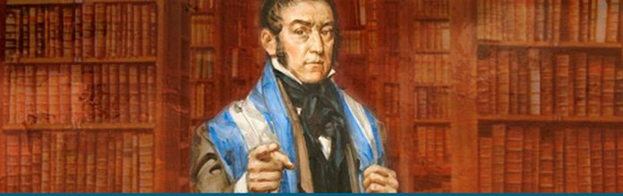

La Biblioteca San Martín proyectará el filme “El Santo de la Espada”
La función será el lunes 24, a las 18.30, con ingreso gratuito. Coincide con la celebración del Día del Padre Mendocino.
Somos la más antigua de las bibliotecas populares de gral. san Martin- Cumpliremos 109 años en el distrito de Gral. San Martin
La colección que ofrecemos posee libros primarios, secundarios y universitarios y de lectura en general
La función será el lunes 24, a las 18.30, con ingreso gratuito. Coincide con la celebración del Día del Padre Mendocino.
Nuevas propuestas para niños y adultos buscan fomentar el hábito lector y crear espacios de disfrute literario compartido.
